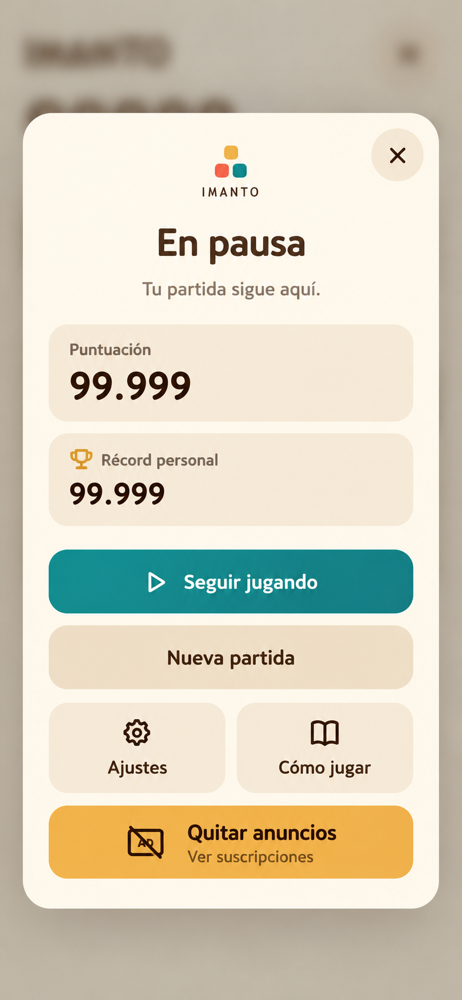

Imanto · Último repaso
Cambios locales para elegir. La versión de TestFlight sigue siendo 0.20 (1).
Prueba jugable 6×6
Partida independiente, madera elegida y paletas aleatorias. Completa seis del mismo color.
Jugar al 6×6Acabados de bloques
Compara Actual, Cerámica, Cristal, Gominola y Madera con el movimiento Elástico. Cambia el color y prueba colocar o completar una línea.
Probar materiales y paletasElástico elegido
Elástico ya está integrado. Prueba sus tonos sutiles al azar y el nuevo sonido de victoria para completar líneas.
Probar sonidos y animacionesBotón de quitar anuncios
Aprobado e implementado con el texto «Quitar anuncios», sin subtítulo. La imagen conserva la propuesta original.

Piano más tranquilo
Meditation Impromptu 01 · Kevin MacLeod
Grabación real, CC BY 4.0. Nueva candidata para Imanto; tus ajustes de volumen y silencio se conservan.